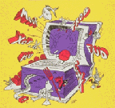

| Back to Jargon File Resources | Up to Site Map | $Date: 2003/10/27 05:33:05 $ |

In fall 1991, the 2.9.6 version of the File was published as "The New Hacker's Dictionary". Version 3.0.0, with over 250 new entries and numerous changes, was published in August 1993 as TNHD's second edition (ISBN 0-262-68079-3). Version 4.0.0, with 114 new entries and 235 changed entries, was published in September 1996 as TNHD's third edition (ISBN 0-262-68092-0).
If you are viewing this through a PNG-capable browser, here's the Second Edition cover art. 
Here's a sales breakdown for the First and Second editions. The First Edition sold 23,409 paperbacks and 871 hardcover copies; the Second Edition, up to 25 January 1996, had sold 14,367 paperback and 741 hardcover copies.
Besides nice typography, the book gives you prefaces by Guy Steele and Eric Raymond, a cover by Duane Bibby (he of the TeX lion and the Metafont kitty), and the infamous Crunchly cartoons by Guy Steele as interior illos.
No one can stop you from laser-printing the HTML, and the coauthors have legally relinquished the right to even try in order to respect hacker-community traditions of information sharing. We do ask you not to do this; widespread `pirating' of a typeset version would ruin anyone else's future chances of cooperating with a publisher on a project involving both free and commercial distribution.
You should buy this book because, if it does well, it will encourage future projects that combine free and commercial distribution channels. This would be a Good Thing, because it would both promote free electronic access to information and reward people in the marketplace for putting it together and making it accessible.
The nice typeset book version is being carried by all major U.S. book chains — B. Dalton's, Waldenbooks, Barnes & Noble, etc. (The D.C.-area Crown chain is an exception; they don't like the Press's discount structure.)
It will also be in many college bookstores and the more cerebral sort of independent bookseller (especially SF and technical bookstores). Many stores will feature a big cardboard pop-up display featuring art by Duane Bibby.
If you don't see it at your favorite bookstore, ask for it by name. Sometimes lesser branches of the chains won't actually order copies in from the chain's warehouses until they have someone order it. The good side of this is that your single request may cause them to order ten or more copies, which would be good for reasons I go into below.
Check out MIT Press's on-line catalog at http://www-mitpress.mit.edu. You can order the book on-line using Netscape.
Sales have been brisk: see the sales figures.
Internet hackerdom has taken this book to its collective heart.
William Safire's December 8th 1991 "On Language" column in the New York Times mentioned TNHD as one of his picks for gift-giving that Christmas. Byte ran an unabashed rave in their January 1992 issue. Laudatory reviews have also appeared in PC Magazine, IEEE Spectrum, PC World and Wired. The December 1991 issue of Computing Reviews ran TNHD's definition of `creationism' on its cover. More recently, the British journal New Scientist, Sciences, and Mondo 2000 have all praised the book. In mid-October 1992 it made "On Language" again and was cited by name on the front page of the Wall Street Journal. MTV has based segments of the "CyberStuff" feature of "This Week in Rock" on excerpts from the File.
As TNHD II hit the street, Newsweek magazine ran a major article on the Internet and its history, using the Jargon File as a primary source and quoting several File entries in a prominent sidebar. And in November 1995, Time Magazine used TNHD as the basis for an entire article on network culture in its first-ever "Time Digital" section.
TNHD III triggered a similar wave of interest, including interview articles in the August 1996 Wired and the October 21st 1996 People.
For scholars, the Oxford English Dictionary now uses TNHD as a major source for computing neologisms.
We have continued to collect raves whenever the book has been reviewed, except for one or two reviewers who just didn't get it and went away puzzled.
A word from your humble compiler...
One of my major objectives in seeing the Jargon File published on paper is to help the general public to get a truer and more positive image of hackers than they seem to have now.
Right now, our society is in a phase of reforming its attitudes and laws about information privacy, intellectual property, hacking, and First Amendment issues in electronic networking. It is not a good thing for this process that many in the public think of hackers as a potential conspiracy of dangerous nerds, that the very term "hacker" is now considered by many ignorant people to be a synonym for "computer criminal". We must reclaim the word "hacker" for our own!
There is a real danger to hackers that restrictive, wrong-headed information laws and strict licensing requirements for "software professionals" might kill our open, free-spirited culture. This would be a tragedy not just for us but for the whole world that benefits from our creativity.
Groups like the Electronic Frontier Foundation have been formed to fight for hackerdom on the legal and political level. To support that, though, the public needs to be educated about all the positive aspects of hackerdom. We need them to see our sense of humor, our dedication, our playfulness, our idealism; we need to communicate the excitement, challenge and promise of the new worlds we're exploring. We need the man in the street to see us as allies, not as a threat.
I think this book can be a big help with that. If it sells a million copies, that's a million people who will learn something of our traditions, and our dreams, and (perhaps most importantly) how to laugh with us. That's a million friends. I think we need those friends, and I think we're going to need them a lot more before society completes its adaptation to the new computing technologies.
Since I wrote the preceding in 1991 (eleven years ago), positive changes in the mainstream culture have made some of these issues perhaps a bit less pressing. The battle to reclaim the term `hacker' hasn't been definitively won, but at least Time Magazine and its ilk routinely mention the hacker vs. cracker distinction in major stories.
We're still a tiny minority, but our stock in the pop culture has definitely risen since TNHD I. Movies like "Sneakers", "The Net", and "Independence Day", silly though they are, feature hacker heroes. The kinds of teenage techno-nerds that sometimes mature into hackers have become admired role models rather than automatic objects of contempt. Despite the tiresomeness of much `information superhighway' rhetoric, it has focused a lot of attention and approval on the infrastructure hackers have been quietly helping to build for decades. The rise of Linux and open-source software hasn't hurt either.
In short, hackerdom seems to be winning its culture war. Now we have to cope with success.
The explosion of public interest in the Internet since 1994 has, if anything, made TNHD's role more important. While it's kind of fun to have everybody want to play our game after thirty years of being marginalized as dreamers and geeks, there's now another real danger; that the culture and shared values that make the Internet work could get lost in the noise made by millions of newbies. To counter this, we need to tell our story and transmit our culture in a way that's accessible to those hordes of new users. While TNHD can't do that all by itself (because it takes long-term person-to-person contact to do acculturation really right), it's far from the least effective vector we have. And TNHD plus Internet exposure is effective.
This is why I hope you will want The New Hacker's Dictionary to sell a million copies. I think there's a significant chance for it to make a significant impact on the public's consciousness, by becoming everybody's idea of the perfect gift book for the budding Internet user.
Soooo...tell your friends about this book. I used to say "the freedom you help save may be your own". That's still an issue, but I can now ask you to plug TNHD for less fearful reasons. Help out the poor bewildered Internet newbies in their teeming millions! Our hacker heritage is just what they need to make moral and mythic sense of the infant cyberspace struggling to be born out of the Net. This is our time. This is our book. Share, and enjoy!
| Back to Jargon File Resources | Up to Site Map | $Date: 2003/10/27 05:33:05 $ |